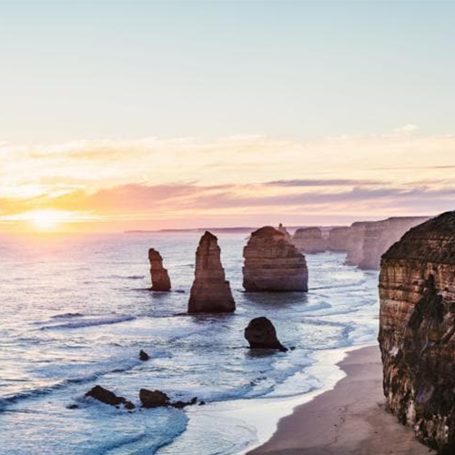
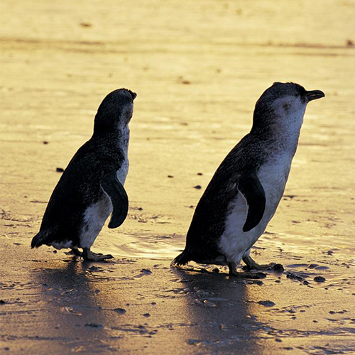
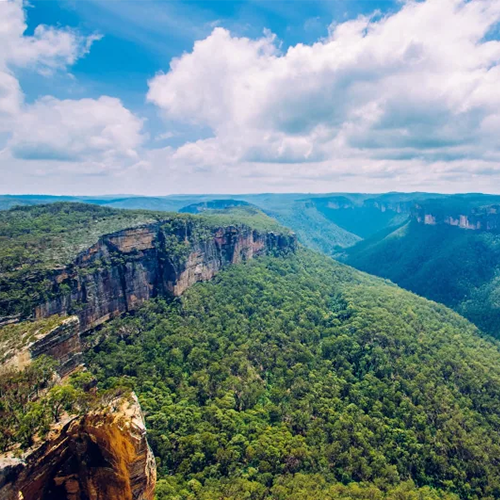
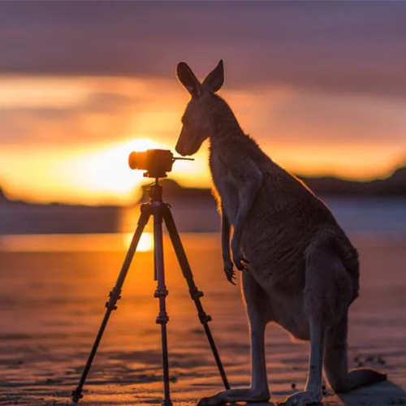
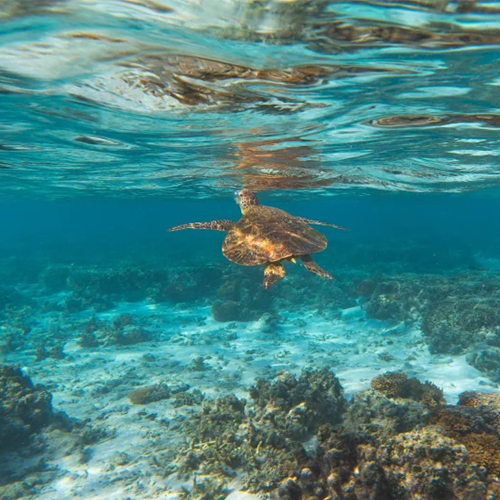

ContentArea
About
No matter where you go in Australia, you’re sure to have an amazing time. We’re home to eight states and territories - each one with its own unique mix of environments, cultures and rhythms. From rolling deserts and quaint capitals to lush rainforests and sun-soaked cities, you’re going to want to visit them all.
view more- NewSouthWalesOpera House
- Dine at a world-class restaurant, see a performance or step behind closed doors for a tour of backstage areas, complete with informative history and fun celebrity anecdotes.
-
- NewSouthWalesBondi Beach
- This iconic beachside neighbourhood in Sydney’s east is a dynamic pocket of sun and sand, with a bustling social scene.
-
- QueenslandGold Coast
- From theme parks to shopping, surfing to ancient rainforest, here’s how to make the most of the Gold Coast.
-
- Northern TerritoryUluru-Kata Tjuta
- The ancient rock formations of Uluru and Kata Tjuta rise from the land to make an incredible sight.
-
- Wild AnimalsKangaroo
- From charismatic kangaroos to enigmatic emus, most of Australia’s wildlife is endemic - found nowhere else on the planet
Activity
When you think of Australia (besides kangaroos and koalas) you probably think of sunny beaches and rolling waves - and you’d be right! If you visited one beach a day, it would take you 27 years to see them all. Our sandy stretches are home to world-class surfing, unique marine life, striking ocean pools and unbeatable beach culture.
view more-
- Get your adrenaline pumping Offroad
- Pump up the adrenaline on your Australian holiday with these exciting adventures.
-
- Snorkel through an underwater world Swim
- Go beyond well-known destinations to discover Australia’s beach and island gems.
- Meet Australia’s cutest animals Wildlife
- Australia’s animals are one-of-a-kind, and so are the experiences that get you up close and personal.
-
- The ultimate freedom on a road trip Offroad
- Choose a type of road trip, location and duration that suits you; your journey begins here.
-
- Soak up beautiful beaches Swim
- You’ll soon learn why the sand and sea hold such a special place in our national identity.
WHY AUSTRALIA IS THE BEST PLACE TO VISIT
Endless sunshine, sandy beaches and stunning landscapes.
Discover the reasons why Australia should be at the top of your bucket list.
Place
- A city of iconic attractions and brilliant beaches, Sydney is a destination you'll never forget.
-
Sydney is home to must-visit icons like the Sydney Harbour Bridge and Opera House, but this Harbour City is constantly evolving.
New rooftop bars, theatre shows and designer shops pop up at every turn, and the urban excitement is perfectly balanced by afternoons spent lying on the sand. Plus, with diverse destinations at its doorstep, Sydney is the perfect base for day trips and weekends away.
view more
Gallery
Discover Australia’s unique destinations, from the turquoise waters of the Great Barrier Reef to the Red Centre's glowing Uluru. Where will you venture?
- 
- 
- 
- 
- 